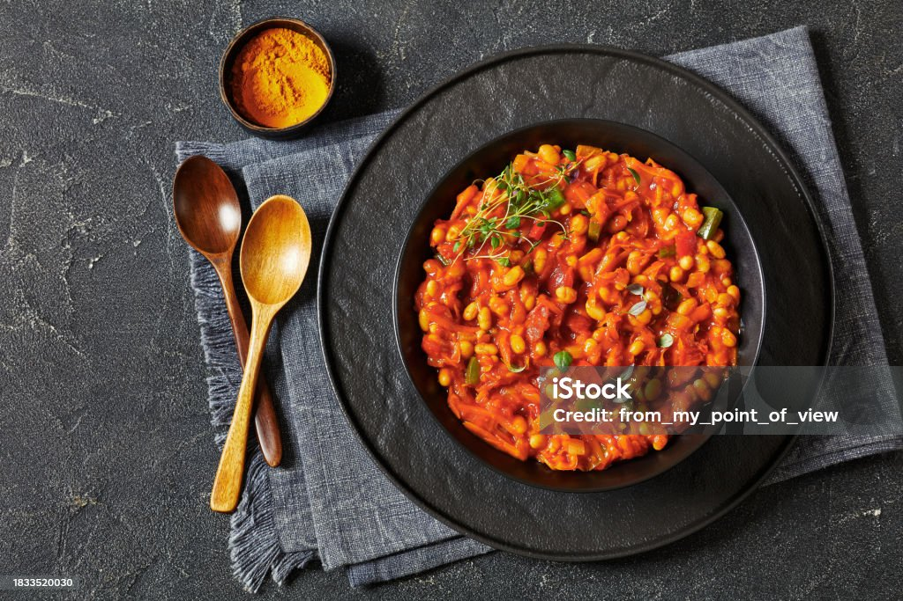

Loaded Stuffed Sweet Potato

Chakalaka is a traditional South African relish made from sautéed vegetables
like carrots, onions, tomatoes, and peppers. It’s usually seasoned with curry powder, garlic, and spices, giving it a warm, slightly spicy flavour.
The texture is soft and saucy,
and it’s commonly served as a side dish with pap, bread, rice, meat, or braais. Because the recipe varies from home to home,
it can be mild or very hot — but it’s always packed with flavour and comforting.
Ingredients
- 2 (3 ounce) packages cream cheese, softened
- ½ tablespoon olive oil
- ⅓ cup creamy salad dressing, e.g. Miracle Whip
- 1 (8 ounce) can pineapple tidbits, juice reserved
- 3 (5 ounce) cans chunk chicken, drained
- 1 cup blanched slivered almonds
- cayenne pepper to taste
- 1 ½ cups seedless grapes, halved
- 2 tbsp vegetable oil
- 1 large onion, finely chopped
- 1-2 fresh chilies, finely chopped (optional, adjust to taste)
- 1 green bell pepper, diced
- 1 red bell pepper, diced
- 2-4 large carrots, grated
- 2-3 medium tomatoes, chopped (or 400g can chopped tomatoes)
- 1 tbsp tomato paste
- 1-2 tsp curry powder (mild, medium, or hot)
- 1 tsp paprika
- 1 can (400g/14oz) baked beans in tomato sauce
- Salt and pepper to taste
- Fresh coriander (cilantro) for garnish (optional)
Instructions
- Sauté the aromatics: Heat the oil in a large saucepan or pot over medium heat. Add the chopped onion and cook until soft and translucent, about 2-3 minutes.
- Add spices: Stir in the minced garlic, chopped chilies (if using), curry powder, and paprika. Fry for about 1 minute until fragrant.
- Cook the vegetables: Add the diced bell peppers and grated carrots. Stir well to ensure all the vegetables are coated with the spices, and continue cooking for another 5-10 minutes until they begin to soften.
- Simmer with tomatoes: Add the chopped tomatoes and the tomato paste. Stir to combine, then reduce the heat to low, cover the pan, and allow the mixture to simmer for about 10-15 minutes, stirring occasionally. The mixture should thicken slightly but remain moist.
- Finish with beans: Stir in the baked beans. Simmer for a further 5 minutes until everything is heated through and the flavors have integrated.
- Season and serve: Season with salt and pepper to taste. Remove from the heat and garnish with fresh coriander if desired. The dish can be served immediately while warm, or allowed to cool and served as a cold relish
Home